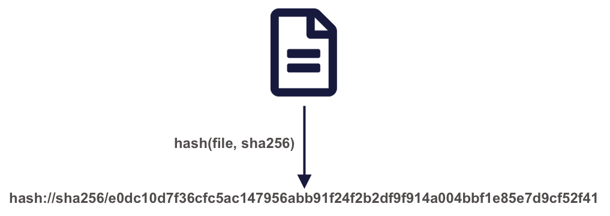
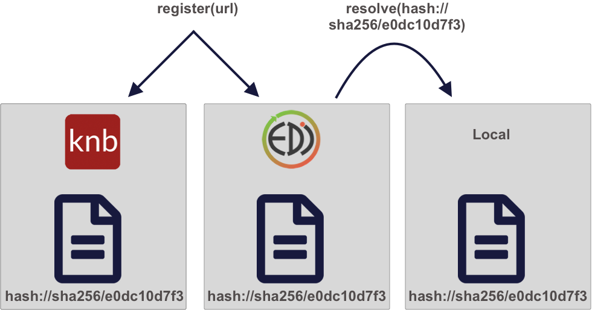
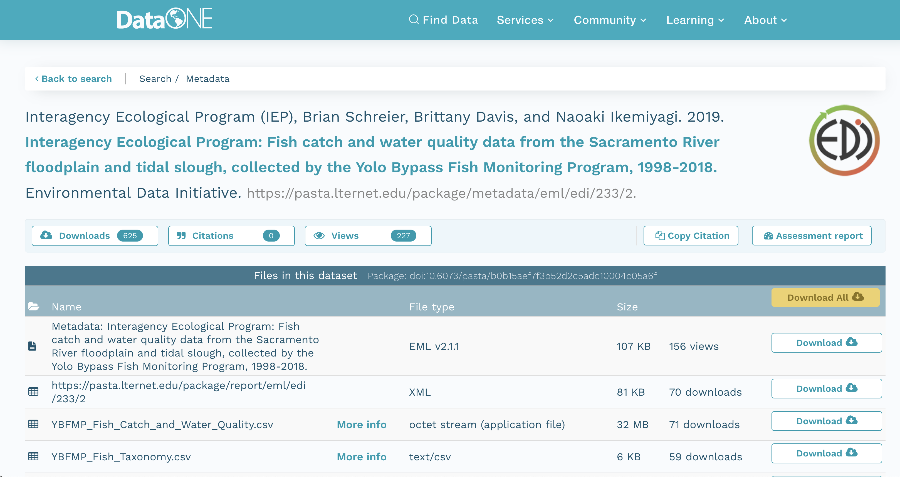
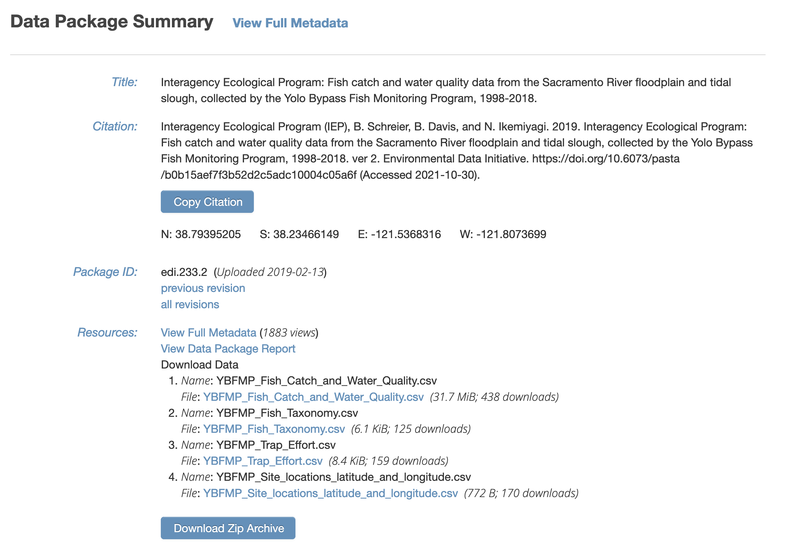

delta_catch <- readr::read_csv('/Users/jkresearcher/Projects/2018/Delta_Analysis/delta_catch.csv')
delta_taxa <- readr::read_csv('../../Delta_2021/delta_taxa.csv')
delta_effort <- readr::read_csv('delta_effort.csv')
delta_sites <- readr::read_csv('data/delta_sites.csv')Learning Objectives
- Why we strive for reproducible data access
- How content identifiers differ from DOIs
- How content identifiers make research more reproducible
- Ways to register and resolve content identifiers for unpublished data
- How content identifiers can resolve to published data sources
8.1 Reproducible Data Access
8.1.1 Barriers to data access
Traditional ways of working with data – as files on a file system – limit the reproducibility of code to local compute environments. A typical R analysis file will load one or many data files from the local disk with code like this:
Which of those file paths are the most portable? And which will run unmodified on both the original computer that they were written on, and on colleagues’ computers? In reality, none of them, in that they require that a specific data file be present in a specific location for the code to work properly, and these assumptions are rarely met and hard to maintain. Hardcoded paths like these are often spread deeply through the scripts that researchers write, and can become a surprise when they are encountered during execution.
The Web partly solves this problem, because it allows code to access data that is located somewhere on the Internet with a web URI. For example, loading data from a web site can be much more portable than loading the equivalent data from a local computer.
delta_sites_edi <- 'https://portal.edirepository.org/nis/dataviewer?packageid=edi.233.2&entityid=6a82451e84be1fe82c9821f30ffc2d7d'
delta_sites <- readr::read_csv(delta_sites_edi, show_col_types = FALSE)
head(delta_sites)# A tibble: 6 × 4
MethodCode StationCode LatitudeLocation LongitudeLocation
<chr> <chr> <dbl> <dbl>
1 BSEIN AL1 38.5 -122.
2 BSEIN AL2 38.5 -122.
3 BSEIN AL3 38.5 -122.
4 BSEIN AL4 38.5 -122.
5 BSEIN BL1 38.5 -122.
6 BSEIN BL2 38.4 -122.In theory, that code will work from anyone’s computer with an internet connection. But code that downloads data each and every time it is run is not particularly efficient, and will be prohibitive for all but the smallest datasets. A simple solution to this issue is to cache a local copy of the dataset, and only retrieve the original from the web when we don’t have a local copy. In this way, people running code or a script will download the data the first time their code is run, but use a local copy from thence forward. While this can be accomplished with some simple conditional logic in R, the pattern has been simplified using the pins package:
delta_sites_edi <- pins::pin('https://portal.edirepository.org/nis/dataviewer?packageid=edi.233.2&entityid=6a82451e84be1fe82c9821f30ffc2d7d')
delta_sites <- readr::read_csv(delta_sites_edi, show_col_types = FALSE)
head(delta_sites)# A tibble: 6 × 4
MethodCode StationCode LatitudeLocation LongitudeLocation
<chr> <chr> <dbl> <dbl>
1 BSEIN AL1 38.5 -122.
2 BSEIN AL2 38.5 -122.
3 BSEIN AL3 38.5 -122.
4 BSEIN AL4 38.5 -122.
5 BSEIN BL1 38.5 -122.
6 BSEIN BL2 38.4 -122.You’ll note that code takes longer the first time it is run, as the data file is downloaded only the first time. While this works well over the short term, abundant evidence shows that web URIs have short lifespan. Most URIs are defunct within a few years (e.g., see McCown et al. 2005). Only the most carefully curated web sites maintain the viability of their links for longer. And maintaining them for decade-long periods requires a focus on archival principles and dedicated staff to ensure that files and the URLs at which they are published remain accessible. This is precisely the role of archival data repositories like the Arctic Data Center, the KNB Data Repository, and the Environmental Data Initiative (EDI).
Finally, no discussion of data access and persistence would be complete without discussing the use of Digital Object Identifiers (DOIs). DOIs have become the dominant means to create persistent links to academic articles, publications, and datasets. As authority-based identifiers, they work when an authority assigns a DOI name to a published work, and then ensures that the DOI name always redirects to the current web location of the resource. This is a lot of work, and there is no guarantees that the authorities will keep the links up-to-date. Journals, societies, and data repositories actively maintain the redirection between a DOI such as doi:10.6073/pasta/b0b15aef7f3b52d2c5adc10004c05a6f and its current location on the EDI Repository. DOIs are commonly assigned to published datasets, and include the bibliographic metadata needed to properly cite and access the dataset.
The challenge with DOIs as they are typically implemented is that they are usually assigned to a Dataset, which is a collection of digital objects that are composed to form the whole Dataset and that can be accessed individually or through an API. Typically, the metadata attached to DOIs does not include an enumeration of those digital objects or a clear mechanism to get to the actual data – rather, the DOI redirects to a dataset landing page that provides a human readable summary of the dataset, and often various types of links to find and eventually download the data. Despite advances in metadata interoperability from DCAT and schema.org/Dataset, there is currently no reliable way to universally go from a known DOI for a dataset to the list of current locations of all of the digital objects that compose that dataset. And yet, this is exactly what we need for portable and persistent data access. In addition, we frequently work with data that doesn’t have a DOI yet as we are creating derived data products for analysis locally before they are published. In conclusion, DOIs are a great approach to uniquely citing a dataset, but they do not provde a way for code to download specific, versioned digital objects from a dataset in a portable way that is persistent over many years.
Thus, we want data access to be:
- Portable – works for anyone, even if they don’t already have the data
- Persistent – over long time periods
- Versioned – the specific version of data used is guaranteed to be returned
- Traceable – references to the provenance of data processing can be made
- Transparent – it is clear from the script what data were used
- Citable – it is clear how to properly cite the associated Dataset for attribution
A powerful approach to solving these problems is by using content-based identifiers, rather than authority-based identifiers like DOIs. A content-based identifier, or contentid for short, can be calculated from the content in a data file itself, and is unique (within constraints) to that content. This is accomplished by using a “hash” function, which calculates a relatively short, fixed-length, and unique value for any given input. Hash functions form the basis of secure cryptography for secure messaging, and so there are many tools available for conveniently hashing data inputs. In our use case, we can use commonly available cryptographic hash functions (such as SHA-256 and SHA-1) to calculate a unique identifier for any given file. This gives us a unique identifier for the file which can be calculated by anyone with a copy of the file, and which can be registered as metadata in repositories that hold those files.

Once we have a content identifier for an object, we can cache the file locally (just like we did with pins), and we can query repositories to see if they contain a copy of that file. Unlike authority-based identifiers, anyone who possesses a copy of a specific version of a data file can calculate the content-identifier for it, enabling us to build systems to find and access those data files across the repository landscape, and really across any web-accessible location. This has all of the power of cacheing and pinning web resources that we demonstrated before, but has the advantage that all holders of the content will use an identical identifier, avoiding broken links. And because content-identifiers can be determined locally before files are published on the web, we can use them in our scripts for data files that have yet to be published and yet know that they will work for others once the files have been published in a repository.

8.1.2 Persistent and portable data access for improving reproducibility
We’ll be working with the following IEP dataset that is stored on EDI:
Interagency Ecological Program (IEP), B. Schreier, B. Davis, and N. Ikemiyagi. 2019. Interagency Ecological Program: Fish catch and water quality data from the Sacramento River floodplain and tidal slough, collected by the Yolo Bypass Fish Monitoring Program, 1998-2018. ver 2. Environmental Data Initiative. https://doi.org/10.6073/pasta/b0b15aef7f3b52d2c5adc10004c05a6f (Accessed 2021-10-30).
You can view this IEP dataset on DataONE:
 It also is visible from the EDI dataset landing page:

It contains several data files, each of which is at a specific web URI, including:
- Fish catch and water quality
- Fish taxonomy
- Trap Effort
- Site locations
delta_catch_edi <- 'https://portal.edirepository.org/nis/dataviewer?packageid=edi.233.2&entityid=015e494911cf35c90089ced5a3127334'
delta_taxa_edi <- 'https://portal.edirepository.org/nis/dataviewer?packageid=edi.233.2&entityid=0532048e856d4bd07deea11583b893dd'
delta_effort_edi <- 'https://portal.edirepository.org/nis/dataviewer?packageid=edi.233.2&entityid=ace1ef25f940866865d24109b7250955'
delta_sites_edi <- 'https://portal.edirepository.org/nis/dataviewer?packageid=edi.233.2&entityid=6a82451e84be1fe82c9821f30ffc2d7d'8.1.3 Storing a content identifier from a URI
Use the contentid package for portable access to data. First, using a web URI, store the content identifier in your local content registry to cache it on your machine. The contentid::store() function retrieves the data from the URL, calculates a hash value for the content, and stores both in a local registry on your machine. This is very similar to the pins::pin function, but it uses the content identifier to point to the data.
delta_catch_id <- store(delta_catch_url)
delta_taxa_id <- store(delta_taxa_url)
delta_effort_id <- store(delta_effort_url)
delta_sites_id <- store(delta_sites_url)
print(c(delta_catch_id=delta_catch_id,
delta_taxa_id=delta_taxa_id,
delta_effort_id=delta_effort_id,
delta_sites_id=delta_sites_id)) delta_catch_id
"hash://sha256/e0dc10d7f36cfc5ac147956abb91f24f2b2df9f914a004bbf1e85e7d9cf52f41"
delta_taxa_id
"hash://sha256/1473de800f3c5577da077507fb006be816a9194ddd417b1b98836be92eaea49d"
delta_effort_id
"hash://sha256/f2433efab802f55fa28c4aab628f3d529f4fdaf530bbc5c3a67ab92b5e8f71b2"
delta_sites_id
"hash://sha256/e25498ffc0208c3ae0e31a23204b856a9309f32ced2c87c8abcdd6f5cef55a9b" 8.1.4 Loading data from a content identifier
Once you have the content identifier for a data file of interest (e.g., delta_catch_id in this case), you can call contentid::resolve() to find the locations where that data is stored. Because you already have it stored locally, it returns the file path to the file on your local registry, which you can then use to load the data into a data frame or process the data as needed.
delta_catch_file <- contentid::resolve(delta_catch_id, store = TRUE)
delta_catch <- readr::read_csv(delta_catch_file, show_col_types=FALSE)
head(delta_catch)# A tibble: 6 × 32
SampleDate SampleTime StationCode MethodCode GearID CommonName
<chr> <time> <chr> <chr> <chr> <chr>
1 1/16/1998 14:05 YB BSEIN SEIN50 Threadfin Shad
2 1/16/1998 15:00 YB BSEIN SEIN50 Inland Silverside
3 1/19/1998 12:17 YB FNET FKNT Threadfin Shad
4 1/19/1998 12:17 YB FNET FKNT Chinook Salmon
5 1/19/1998 11:00 YB PSEIN PSEIN100 Threadfin Shad
6 1/19/1998 11:30 YB PSEIN PSEIN100 Inland Silverside
# ℹ 26 more variables: GeneticallyConfirmed <chr>, GeneticID <lgl>,
# Field_ID_CommonName <chr>, ForkLength <dbl>, Count <dbl>, FishSex <chr>,
# Race <chr>, MarkCode <chr>, CWTSample <lgl>, FishTagID <chr>,
# StageCode <chr>, Dead <chr>, GearConditionCode <dbl>, WeatherCode <chr>,
# WaterTemperature <dbl>, Secchi <dbl>, Conductivity <dbl>, SpCnd <dbl>,
# DO <dbl>, pH <dbl>, Turbidity <dbl>, SubstrateCode <chr>, Tide <chr>,
# VolumeSeined <dbl>, Latitude <dbl>, Longitude <dbl># And two more examples
delta_taxa_file <- contentid::resolve(delta_taxa_id, store = TRUE)
delta_taxa <- readr::read_csv(delta_taxa_file, show_col_types=FALSE)
delta_sites_file <- contentid::resolve(delta_sites_id, store = TRUE)
delta_sites <- readr::read_csv(delta_sites_file, show_col_types = FALSE)This approach is portable, as anyone can run it without having the data local beforehand. This is because resolve(id) will store the data locally if someone does not already have a copy of the data in their local cache. This works by consulting a number of well-know registries to discover the location of the files, including DataONE, Hash Archive, Zenodo, and Software Heritage.
This approach is persistent, because it pulls data from these persistent archives, and can take advantage of archive redundancy. For example, here is the list of locations that can be currently used to retrieve this data file:
contentid::sources(delta_catch_id, cols=c("identifier", "source", "date", "status", "sha1", "sha256")) identifier
1 hash://sha256/e0dc10d7f36cfc5ac147956abb91f24f2b2df9f914a004bbf1e85e7d9cf52f41
source
1 /home/runner/.local/share/R/contentid/sha256/e0/dc/e0dc10d7f36cfc5ac147956abb91f24f2b2df9f914a004bbf1e85e7d9cf52f41
date status sha1
1 2023-06-26 21:24:43 200 <NA>
sha256
1 hash://sha256/e0dc10d7f36cfc5ac147956abb91f24f2b2df9f914a004bbf1e85e7d9cf52f41This approach is reproducible, as the exact version of the data will be used every time (even if someone changes the data at the original web URI, which would require a new content identifier).
This approach is traceable because there is a reference in the code to the specific data used based on in its content identifier, and the only way to change which data are used is to change the checksum that is being referenced to a new version.
8.1.5 Storing and using local data identifiers
Because not all data are already published, it is also helpful to being working with content identifiers before the data are made public on the web. This is easily accomplished by storing a file in the local regitry, and then using its content identifier during analysis.
# Store a local file
vostok_co2 <- system.file("extdata", "vostok.icecore.co2", package = "contentid")
id <- store(vostok_co2)
vostok <- retrieve(id)
co2 <- read.table(vostok, col.names = c("depth", "age_ice", "age_air", "co2"), skip = 21)
head(co2) depth age_ice age_air co2
1 149.1 5679 2342 284.7
2 173.1 6828 3634 272.8
3 177.4 7043 3833 268.1
4 228.6 9523 6220 262.2
5 250.3 10579 7327 254.6
6 266.0 11334 8113 259.6Later, when the data file is published to a DataONE repository, or registered in Hash Archive, the script will work for other people trying to access it via contentid::resolve().
8.1.6 Bonus: Improvements to content identifiers
The contentid package is a work in progress, but holds tremendous potential to provide portable, persistent data access. However, some issues still remain to be worked out.
First, content identifiers are not well-linked to DOIs. DOIs are the current standard for citing data, and carry the citation metadata for data packages (such as author, title, publication year, etc.). But the contentid package currently lacks a mechanism to determine the citation for a file that is used in a script. Because data networks like DataONE maintain the association between each content-identifier that is registered there with the assigned DOI for the Dataset that the object is part of, it would be technically feasible to extend the contentid package to retrieve the citation for a given content identifier.
For example, if the data is on DataONE, we could write a function to print the citation:
get_citation(id)And this can even be displayed inline in the markdown text. For example, this chapter used data from:
M. R. Manning,W. H. Melhuish. 1997. Atmospheric 14C record from Wellington, New Zealand. ESS-DIVE. ess-dive-4694e4db5ef14ce-20180726T003323574 https://search.dataone.org/view/ess-dive-4694e4db5ef14ce-20180726T003323574
Second, content identifiers are opaque, and not particularly transparent. For many researchers, seeing the long hash value in a script will not be very meaningful. The contentid package needs mechanisms to transparently indicate what a content identifier refers to. Again, we have this information available dynamically through the metadata collated in networks like DataONE. Another useful extension to contentid would be to provide functions for displaying detailed metadata about a content identifier when it is available, as well as a mechanism to provide more human-readable aliases for the identifier.
These types of ideas for extension are how the R ecosystem advances. Anyone who sees a better way to extend packages like contentid can do so, or even create their own packages to ecplore new approaches to reproducible data access.
8.2 R Packages for Data Access
TODO: MBJ to add back sections on DataONE and ROpensci packages for data access
- dataone
- rfishbase
- …